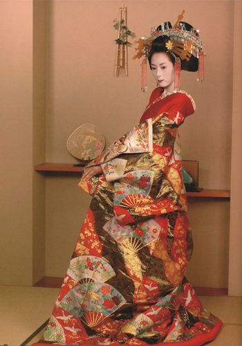

La vestimenta diaria de Japón es como la vestimenta típica occidental, los pantalones y las camisas no son una novedad. Se puede decir que algunas vestimentas destacadas de la vestimenta tradicional son comunes en la vida diaria. Además, los hombres generalmente usan traje, o el uniforme de pantalón con chaqueta de cuello mandarín.
Es costumbre japonesa quitarse los zapatos antes de pisar el piso de las casas, que generalmente son de madera fuerte. Esto es porque los japoneses tienen la idea de que al llegar a una casa llevan en los zapatos malas vibraciones del exterior y, por eso, se quitan los zapatos que usan afuera. Dentro de la casa se usan unas sandalias especiales. La vestimenta, por excelencia, y por ser la más reconocida desde hace mucho tiempo es la Yukata o Kimono, que es como una bata larga que llega hasta los tobillos, que hace sentirse cómodo, se sostiene en la cintura por un listón grueso, Obi o cinturón, que por la parte de atrás se hace nudo haciendo una especie de moño. La yukata se usa, en estos días, solo para las fiestas populares, en las mujeres se usan yukatas de variados y alegres colores, y en los hombres, se usa algo más masculino, tal vez una pieza de un color oscuro. Otra parte importante de la vestimenta japonesa son las Geta (calzado) similares a unas sandalias de madera, con dos piezas de madera perpendiculares como suela.